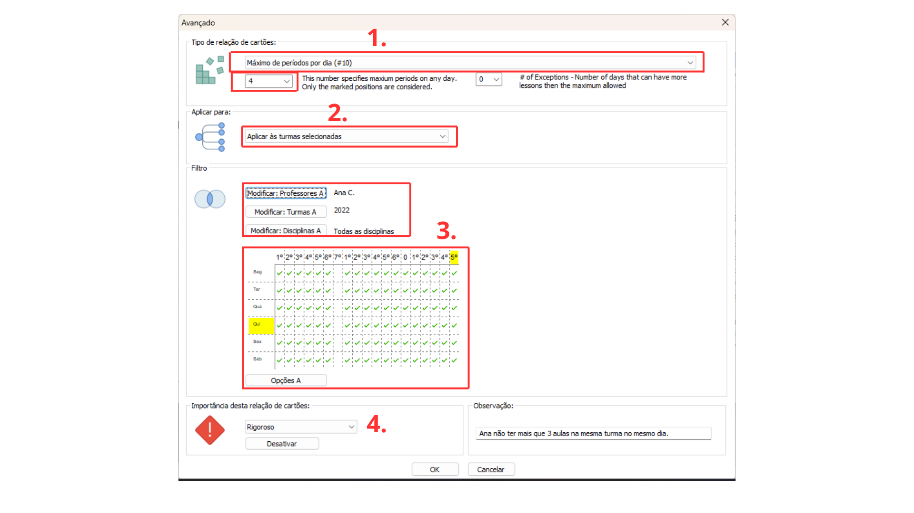

Detalhes do post:
Aulas Noturnas Limitadas a um Dia por Semana para Docentes:
Descrição:Os professores só podem dar aulas no período da noite em um dia da semana
Para resolver esse tipo de situação devemos restringir a colocação dos cartões das aulas usando as relações entre cartões avançados.

1- Selecione o tipo de restrição “ Máximo de dias por semana (#0)”, na caixa de texto logo abaixo especificar o número máximo de dias na semana que os professores podem dar aulas noturnas.
2- Selecione a opção “Aplicar aos professores” visto que a restrição deve afetar as disciplinas e turmas que os professores lecionam.
3- Utilize o filtro “Modificar Professores” aplicando para os professores que desejam restringir os dias na semana ministrando aulas a noite; Os filtros “Modificar Turmas” e “Modifica Disciplinas” devem permanecer para todas as turmas e disciplinas ( já limitamos às turmas e disciplinas que os professores selecionados dão aulas).
Selecione no quadro de horários os períodos correspondentes ao turno da noite.
4- Selecione a importância da Restrição, entre: baixa, normal, alta, rigoroso ou otimizar; de acordo com a importância a ser atribuída a essa relação na instituição..
Também escreva uma observação que facilite a identificação da restrição e explique seu objetivo.
Clique em “ok” no canto inferior para salvar a relação.